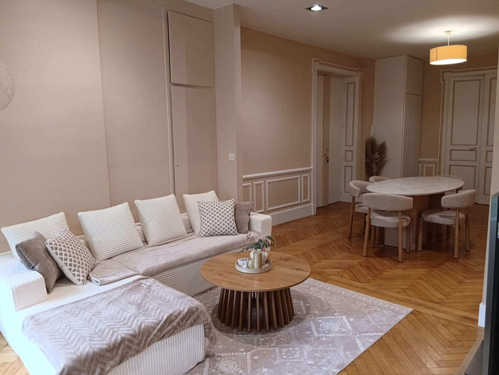
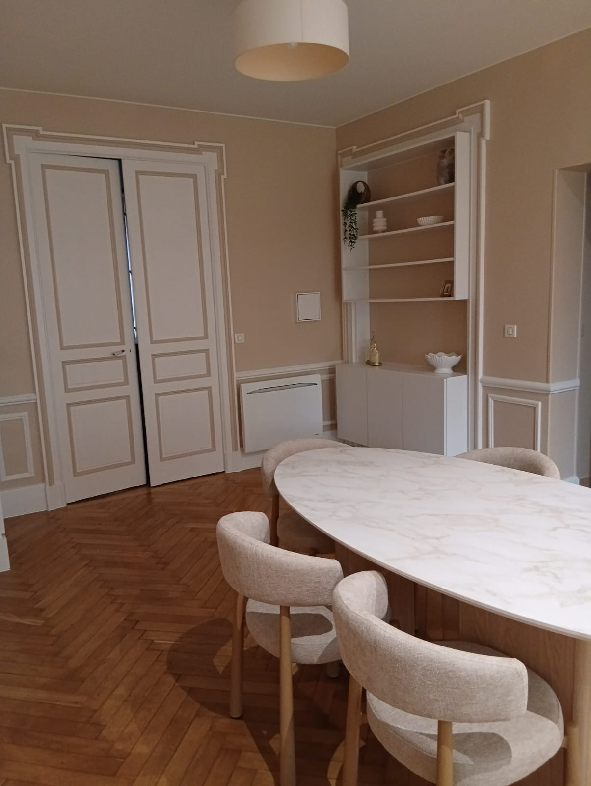
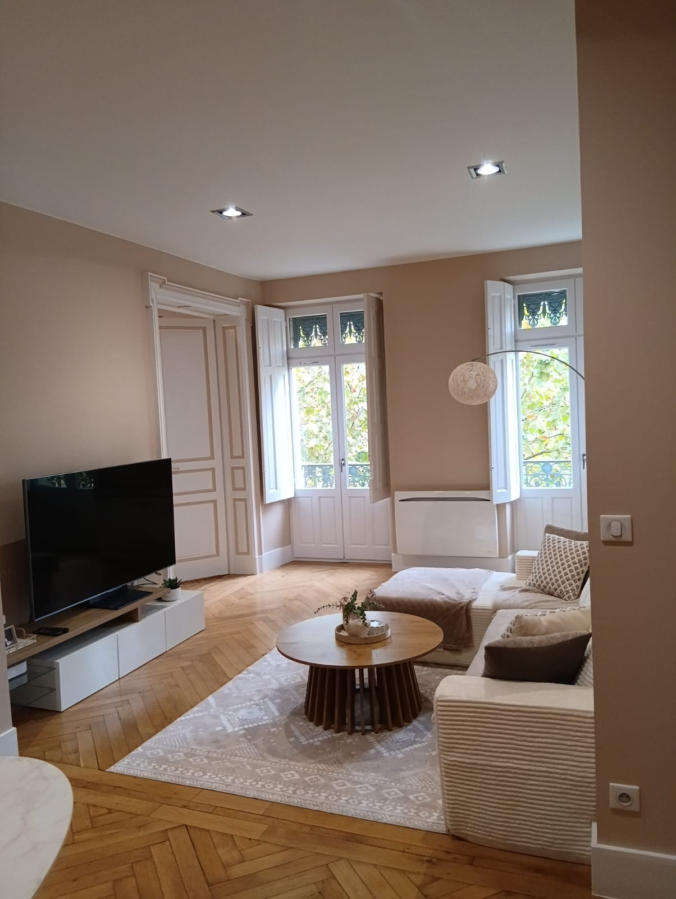
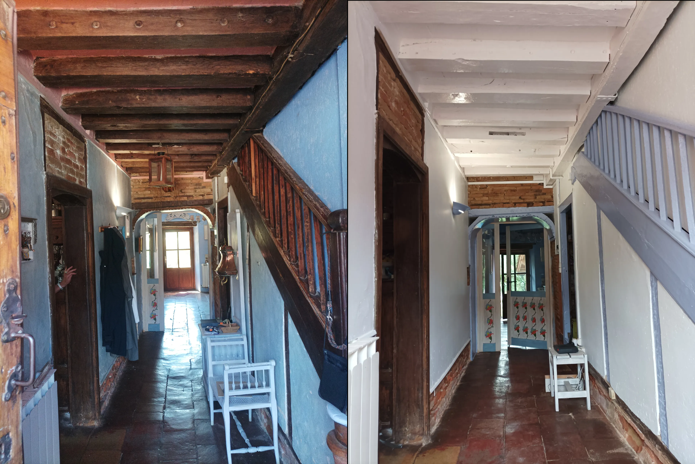
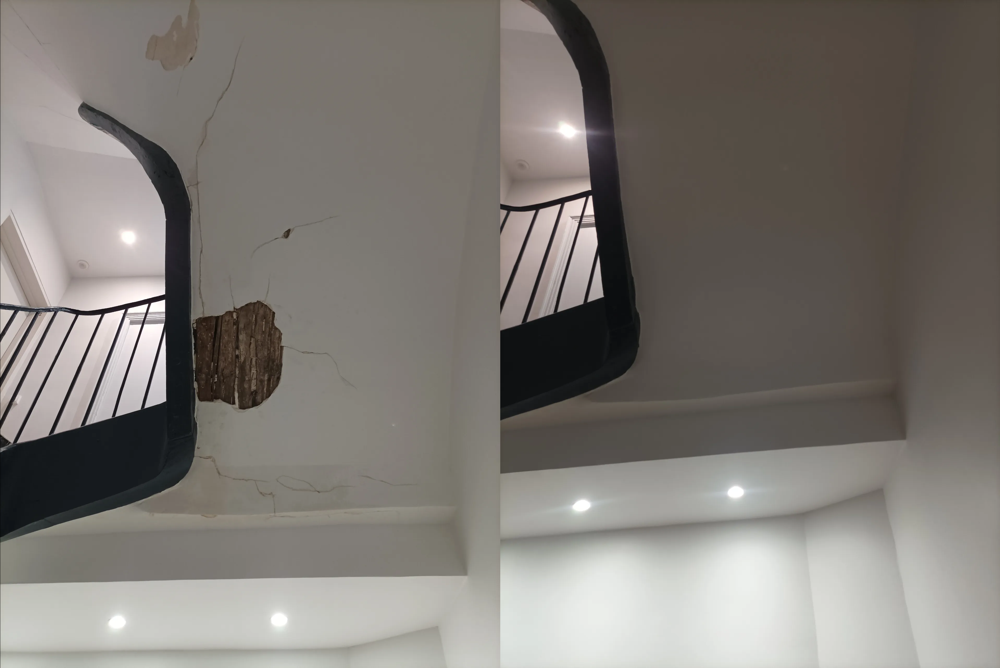
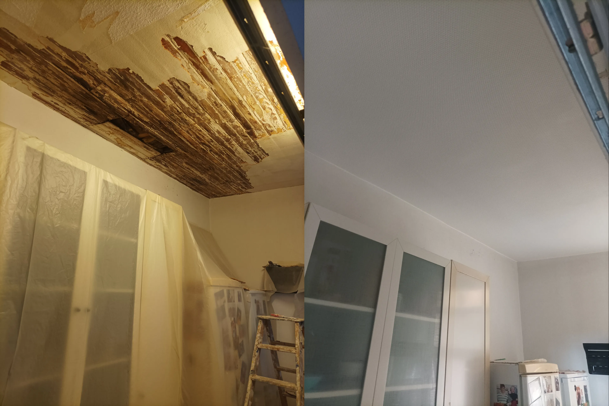
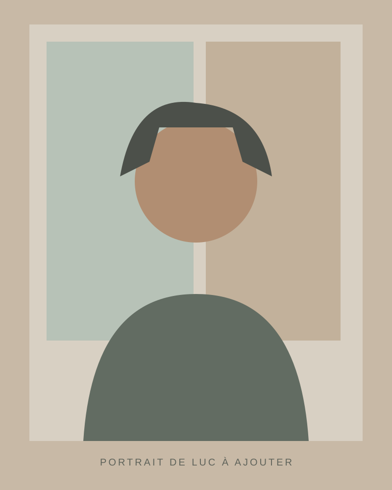

Peinture intérieure
Murs, plafonds, boiseries : préparation attentive et application soignée pour un rendu net.
↗PEINTURE · DÉCORATION · RÉNOVATION
Des espaces transformés avec soin, des finitions qui font la différence et un artisan à votre écoute.

Un intérieur agréable commence par les bonnes couleurs, des supports préparés avec exigence et des finitions maîtrisées.
Chaque projet est différent. L'écoute, le conseil et le soin apporté au chantier permettent de créer un résultat durable, adapté à vos envies.
Découvrir l'artisan ↗Des interventions adaptées à votre maison, votre appartement ou vos espaces professionnels.
Murs, plafonds, boiseries : préparation attentive et application soignée pour un rendu net.
↗
Couleurs, matières et supports décoratifs pour donner du caractère à vos pièces.
↗
Remise en état des supports et finitions pour accompagner vos projets de rénovation.
↗Une sélection de réalisations.



✳ Les images sont provisoires : ajoute tes photos dans le dossier images et modifie leurs noms dans content.js.

L'ARTISAN DERRIÈRE CHAQUE PROJETJe suis Luc Sanchez. J'accorde une grande importance à la préparation, au conseil et à la qualité des finitions. Mon objectif : vous accompagner avec sérieux et simplicité, du premier échange jusqu'à la dernière touche.
Luc Sanchez — Peintre en bâtiment
Échangeons sur votre projet ↗Comprendre vos envies et vous orienter vers les solutions adaptées.
Une attention particulière portée à la préparation et aux finitions.
Un interlocuteur accessible pour suivre votre projet en confiance.
Vous avez un projet de peinture, de décoration ou de rénovation ? Décrivez-moi vos envies. Nous pourrons en discuter simplement.